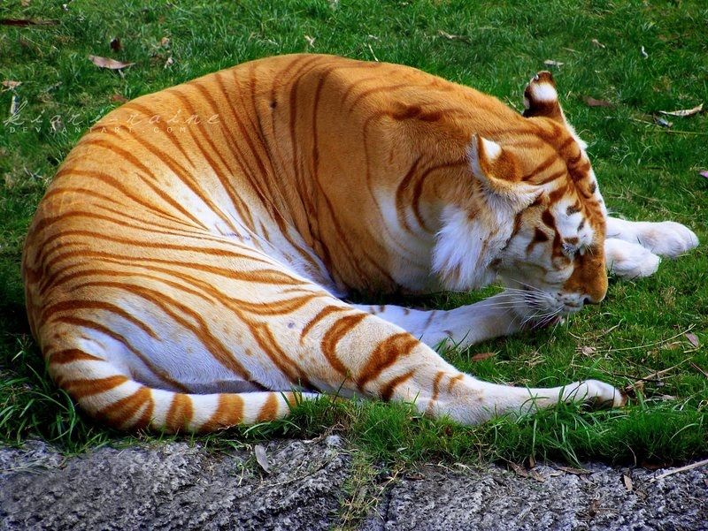
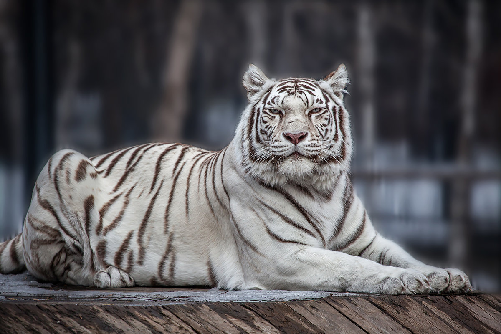

Тигры – это достаточно сильные, выносливые и массивные дикие кошки. Несмотря на этот факт, в зависимости от подвида, вес диких кошек может варьироваться, хотя и незначительно, как и окрас их шерстяного покрова. При этом следует отметить, что дикие кошки, обитающие на материковой части, всегда крупнее своих сородичей, обитающих на островах. Амурский тигр и бенгальский тигр считаются самыми крупными животными этого семейства, хотя в последнее время Амурский тигр начал отдавать первенство по размерам своему бенгальскому собрату. Взрослые особи, особенно мужского пола, вырастают почти до 3-х метров в длину и могут иметь вес почти 300 килограммов.
Высота хищника в холке составляет больше метра. Тело хищника отличается вытянутой формой, при этом оно гибкое и мускулистое, хотя передняя часть туловища развита значительно лучше задней.
Интересный факт о тиграх: полосы на теле, их форма и расположение, уникальны у каждого животного, словно отпечаток пальца у человека. Еще одним интересным фактом является то, что их кожа также имеет полосатый окрас, который можно увидеть сбрив мех. По мере роста шерсти их уникальный рисунок восстановит прежний вид. Тигр имеет около 100 темных полос на своей шубке. Именно эти полосы помогают тигру сливаться с окружающей средой и служат хорошей маскировкой.
Золотой тигр – самая редкая разновидность окраса тигра. У золотого тигра вместо темных полос, полосы коричневого цвета. Есть теория, что эта мутация у тигра возникает в местах обитания с глинистыми почвами, тем самым помогая ему в маскировке. Но эта теория не доказана.
Золотой тигр
Белый тигр – еще одна мутация. Чаще всего возникающая у бенгальских тигров. Эти особи имеют белый окрас с черными полосами. В дикой природе белые тигры встречаются очень редко, а вот в неволе они довольно распространены. Также встречаются и полностью белоснежные особи. Стоит отметить, что белый тигр – это не животное альбинос.
Белый тигр

